Welcome: Prompt Engineer Mission
Lesson 4 turns prompt writing into a guided design practice. Your mission is to translate vague creative intention into visible, testable, and revisable instructions for an image-generation model.
Translate
Convert feelings and concepts into visible details.
Build
Use prompt components to create structured instructions.
Test
Change one variable at a time and document the result.
Learning Objectives
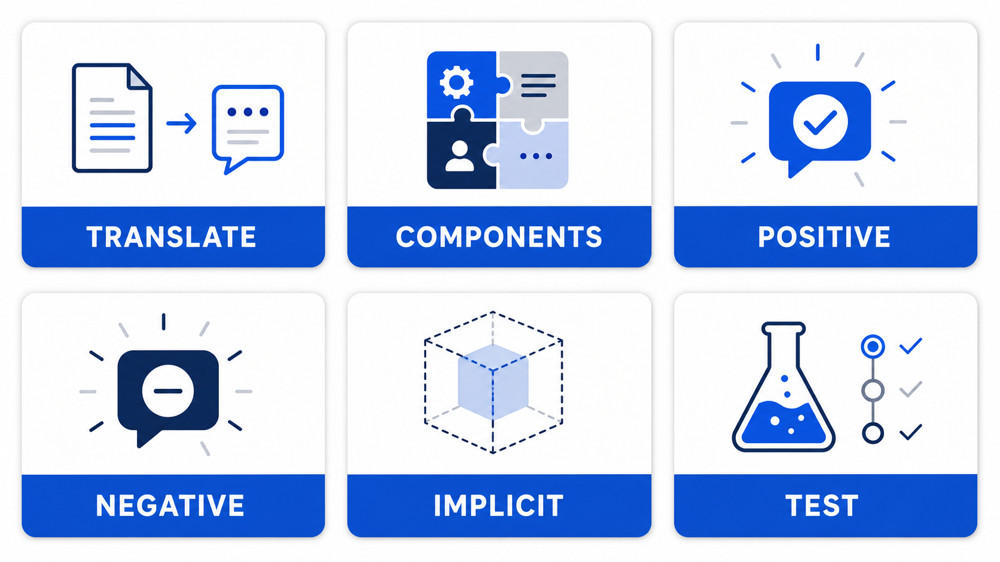
By the end of this lesson, you will be able to:
- Explain why vague prompts often produce vague, generic, or unpredictable images.
- Identify the main components of a strong visual prompt: subject, action, context, style, composition, lighting, camera language, mood, and technical details.
- Distinguish between human-oriented creative language and machine-oriented prompt language.
- Rewrite weak prompts into structured technical prompts that give the model clearer visual anchors.
- Use positive and negative prompts while recognizing that they do not guarantee absolute control.
- Explain implicit parameters, tokenization, word weighting, and prompt weighting.
- Apply controlled experimentation by changing only one prompt element at a time.
- Document prompt iterations and evaluate their visual effects as part of a design process.
Lesson Map: From Vague Idea to Testable Prompt
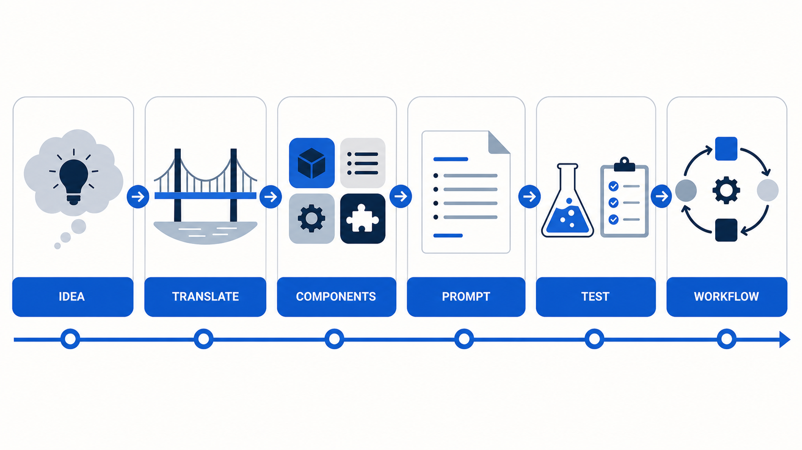
| Mission | Interaction | Main skill |
|---|---|---|
| 1. Prompting is translation | Gap-fill + click-to-reveal | Translate intention into visible details |
| 2. Human vs machine language | Sorting task | Distinguish abstract language from image-ready language |
| 3. Anatomy of a prompt | Component builder | Identify prompt elements |
| 4. Prompt formula lab | Sequencing + gap-fill | Build prompts step by step |
| 5. Prompt control | Matching + prompt pair writing | Use positive and negative prompts |
| 6. Hidden assumptions | Checklist + reflection | Identify implicit parameters |
| 7. Controlled test | Experiment log | Change one variable at a time |
| 8. Final boss | Mini project | Create and justify a prompt system |
Prompting Is Translation
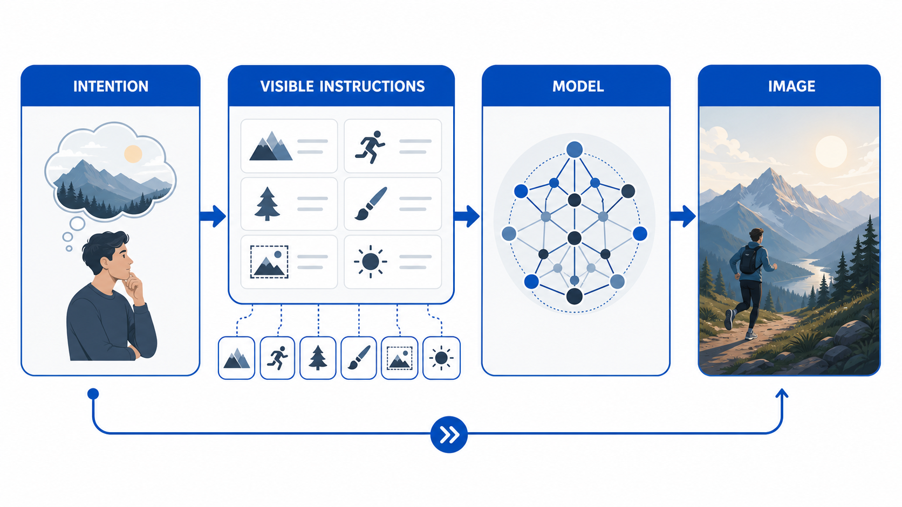
A prompt is not simply a description of what you want. In AI image generation, a prompt translates human intention into machine-oriented visual instructions. You may begin with a feeling such as mysterious, professional, futuristic, or creative, but the model needs visible information: subject, place, objects, light, style, framing, and constraints.
Gap-Fill: Complete the Translation Model
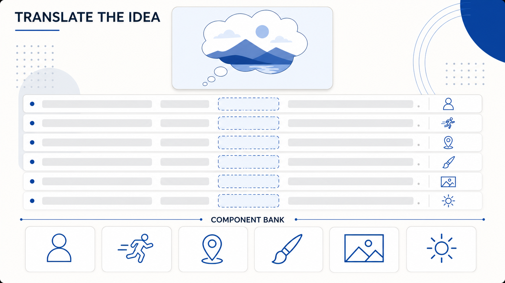
Drag the correct terms into the missing spaces.
Translate the feeling
Choose one creative intention and identify what the model needs to see before writing a full prompt.
| Creative intention | Visible subject | Setting/context | Lighting | Style | Constraint |
|---|---|---|---|---|---|
| Mysterious, cinematic, connected to AI | |||||
| Responsible creativity with machines | |||||
| Professional poster background for an AI photography course |
Human-Oriented vs Machine-Oriented Language
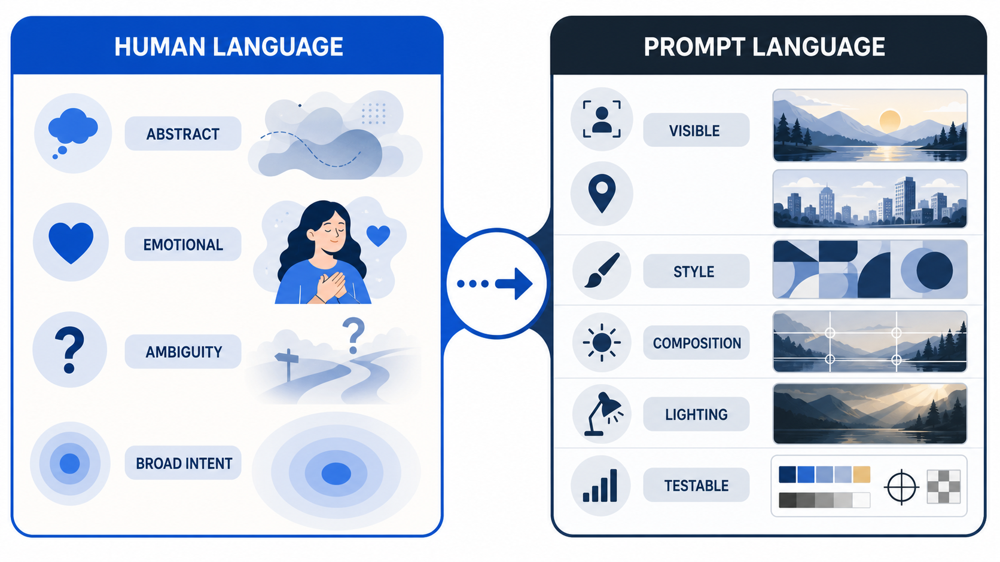
Human-oriented language is useful for creative thinking, but it often contains words that are too open for direct generation. Machine-oriented prompt language turns those words into subject, action, context, composition, style, lighting, camera language, mood, and constraints.
Activity: Language Sorting Sprint
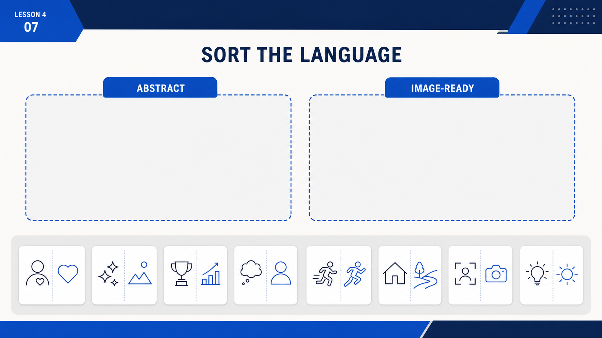
Sort each card into human-oriented or machine-oriented. In this implementation blueprint, use the table to check the intended feedback.
| Card | Correct column | Immediate feedback |
|---|---|---|
| Make it creative. | Human-oriented | This expresses a value but not visible content. Ask: creative how? |
| A university design studio with sketches, camera equipment, laptop screens, and warm natural light. | Machine-oriented | This gives subject, environment, objects, and lighting. |
| Make it emotional. | Human-oriented | Emotion must be translated into expression, framing, lighting, colour, objects, or atmosphere. |
| A close-up portrait of a photographer looking thoughtfully at a printed AI-generated image, soft side lighting, shallow depth of field. | Machine-oriented | This gives subject, action, object, lighting, camera language, and mood. |
| A professional technology image. | Human-oriented | Professional and technology are broad; specify production context and visual style. |
| A clean product photograph of a camera prototype on a white surface, centered composition, soft studio lighting, no text, no logo. | Machine-oriented | This is image-ready because it includes subject, surface, composition, lighting, and constraints. |
Anatomy of a Strong Visual Prompt
A strong visual prompt combines components that help the model connect the prompt to learned visual patterns. The structure does not guarantee a perfect output, but it creates clearer visual anchors and makes revision easier.
| Component | What it controls | Example language |
|---|---|---|
| Subject | The main person, object, environment, or concept. | A design student using an AI image-generation tool on a laptop. |
| Action | What the subject is doing. | Reviewing generated images, sketching concepts, preparing a portrait session. |
| Context | Where the scene takes place and what surrounds the subject. | Inside a contemporary university design studio with cameras and printed sketches. |
| Style | The visual language or medium. | Realistic photography, editorial illustration, cinematic still, minimalist graphic design. |
| Composition | How the image is framed and arranged. | Wide shot, close-up, centered composition, rule of thirds, negative space. |
| Lighting | The quality, direction, and mood of light. | Soft daylight, dramatic side lighting, neon lighting, golden hour. |
| Camera language | Photographic or cinematic framing details. | Shallow depth of field, wide-angle lens, eye-level view, macro shot. |
| Mood | The emotional atmosphere of the image. | Reflective, collaborative, mysterious, calm, energetic. |
| Constraints | Format or production requirements. | Vertical poster background, no text, empty space for typography. |
Activity: Prompt Component Builder
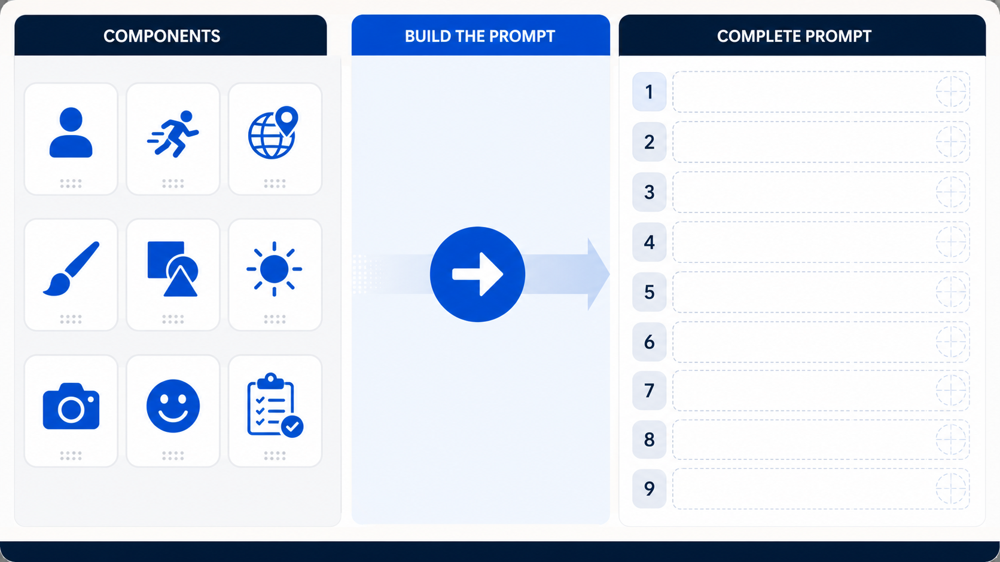
Match each phrase to the correct component, then assemble a complete prompt.
| Phrase card | Correct component | Feedback |
|---|---|---|
| A design student | Subject | Defines the central actor. |
| reviewing AI-generated portrait references | Action | Adds narrative and purpose. |
| inside a modern university photography studio | Context | Creates a visual world. |
| realistic photography | Style | Defines medium and realism. |
| medium-wide shot, clean composition | Composition | Controls framing and layout. |
| soft natural daylight from large windows | Lighting | Shapes mood and realism. |
| shallow depth of field | Camera language | Connects to photography practice. |
| focused and collaborative atmosphere | Mood | Gives emotional direction. |
| no readable text, no logos | Constraint | Avoids common production problems. |
Prompt Formula: A Scaffold, Not a Prison
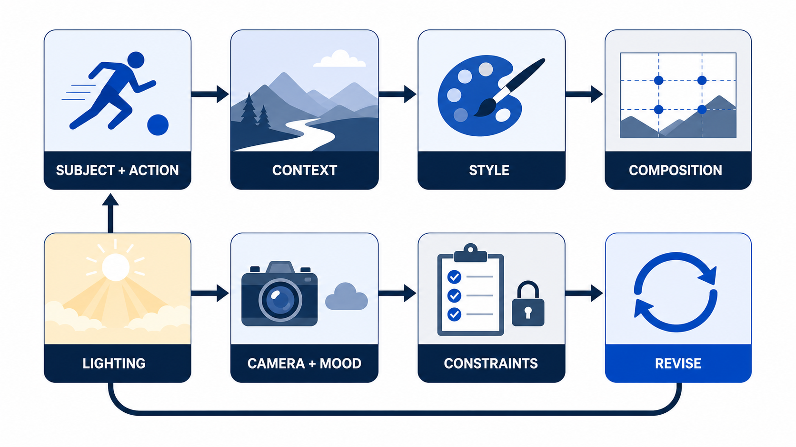
subject + action + context + composition + style + lighting + camera or technical details + mood + constraints
The formula helps you remember what can be specified, but it should not turn every prompt into a rigid list. A short prompt can be useful for exploration; a structured prompt is better when the image must serve a specific design, photography, or audiovisual task.
Activity: Formula Sequencing Challenge
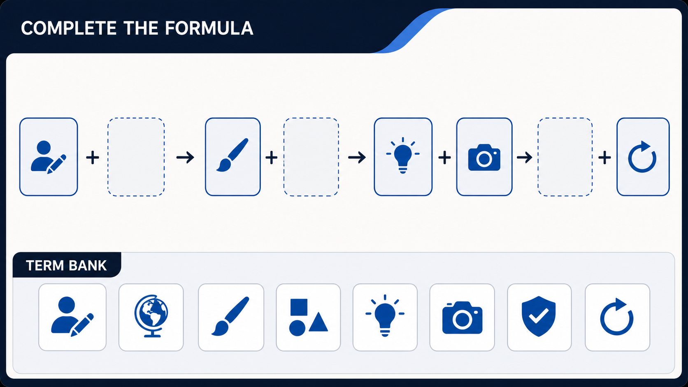
Order the components, then complete the formula terms.
| Sequence position | Prompt component | Learner notes |
|---|---|---|
| 1 | ||
| 2 | ||
| 3 | ||
| 4 | ||
| 5 | ||
| 6 | ||
| 7 | ||
| 8 | ||
| 9 |
Activity: Weak Prompt Rescue Lab
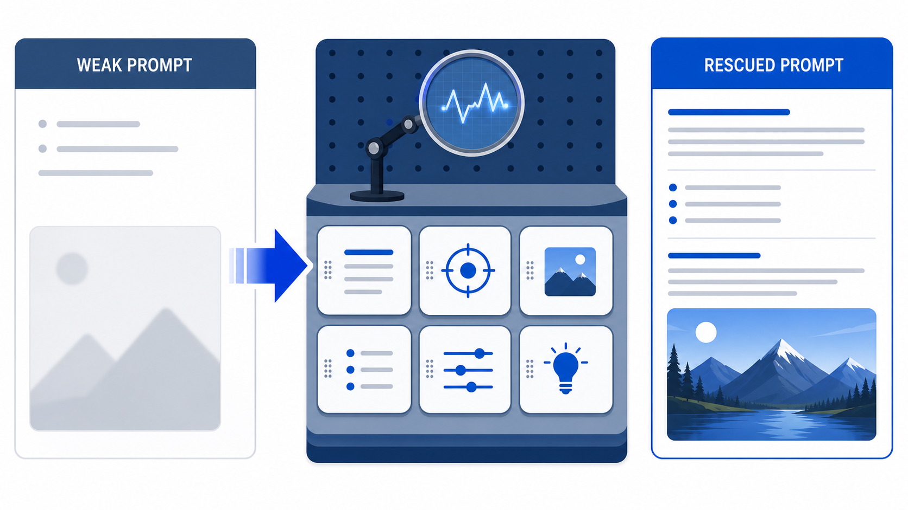
Choose three weak prompts. Rewrite each using the formula. Add at least one production constraint.
| Weak prompt | Subject | Context | Style | Lighting | Composition / technical detail | Improved prompt |
|---|---|---|---|---|---|---|
| A beautiful image about AI | ||||||
| A futuristic photographer | ||||||
| A poster for creativity |
Activity: Hotspot Prompt Autopsy
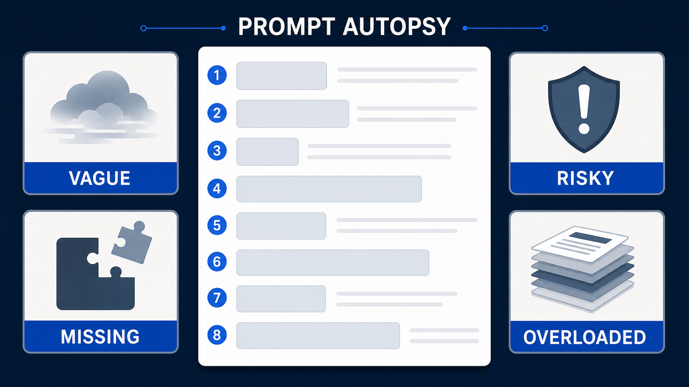
“Make a cool futuristic poster about students and machines with beautiful lighting and some text.”
Click or inspect the risky phrases. Then select a revision action.
| Hotspot / phrase | Problem detected | Why it matters | Revision action |
|---|---|---|---|
| cool | Subjective adjective | The model must invent what “cool” means visually. | Translate into style, colour, composition, or mood. |
| futuristic | Vague style/context | Could become sci-fi cliché, neon city, robot, or generic tech. | Specify near-future classroom, interface panels, or digital light patterns. |
| students and machines | Unclear relationship | It does not explain collaboration, conflict, learning, or production. | Specify action: reviewing generated images, filming, designing, or editing. |
| beautiful lighting | Vague lighting | Beauty is not a lighting setup. | Use soft daylight, dramatic side light, blue monitor glow, or golden hour. |
| some text | Workflow mismatch | AI may generate pseudo-text rather than readable typography. | Generate background with no text, then add typography manually. |
Guidance, Constraints, and Positive / Negative Prompts
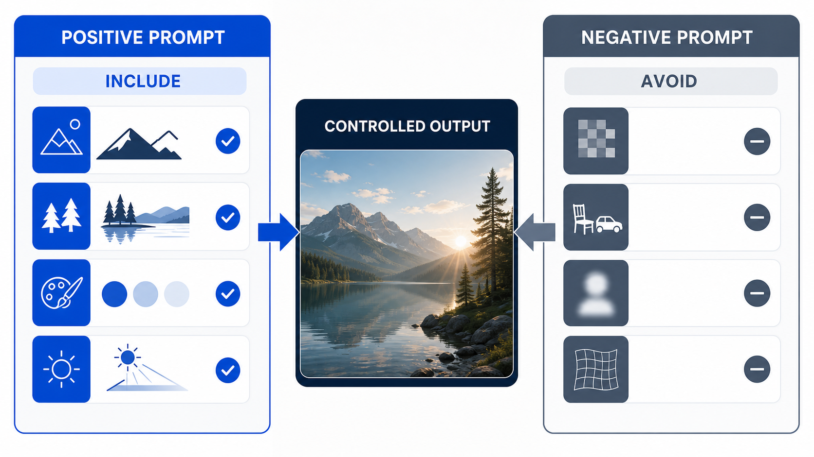
Prompt engineering is not only about adding more description. Positive prompts describe what should appear. Negative prompts describe what should be avoided, where the tool supports them. Negative prompts can reduce problems, but they are not absolute prohibitions.
| Card | Correct destination | Feedback |
|---|---|---|
| realistic portrait of a young filmmaker | Positive prompt | This describes desired subject and style. |
| cinematic lighting | Positive prompt | This guides the look and atmosphere. |
| distorted hands | Negative prompt | This describes an unwanted feature. |
| unreadable text | Negative prompt | This helps reduce pseudo-text when supported. |
| professional studio background | Positive prompt | This gives setting/context. |
| watermark | Negative prompt | This describes something to avoid. |
Write one prompt pair
| Scenario | Positive prompt | Negative prompt | Revision decision |
|---|---|---|---|
| Portrait | |||
| Poster background | |||
| Product image |
Implicit Parameters: What the Model Invents
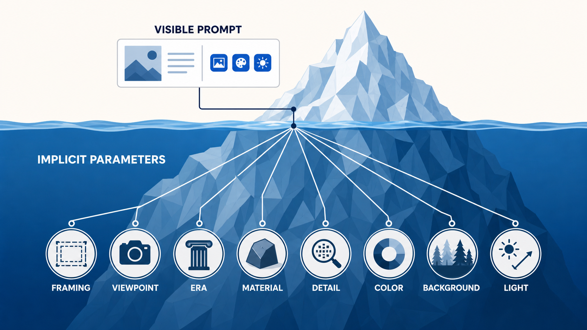
Prompts contain implicit parameters: unstated choices that the model must fill in. A prompt such as “a successful designer in a studio” leaves age, gender, culture, clothing, discipline, studio type, camera angle, lighting, and visual style undefined.
| Implicit parameter | Question to ask | Specify / leave open? | Your decision |
|---|---|---|---|
| Age | Is age relevant to the brief? | ||
| Gender and representation | Will the model default to a narrow or stereotyped image? | ||
| Cultural context | What location, visual culture, or professional environment is implied? | ||
| Design discipline | Graphic design, photography, filmmaking, product design, architecture? | ||
| Style and medium | Photography, illustration, 3D render, poster, storyboard? | ||
| Lighting | Daylight, studio light, dramatic light, monitor glow? |
Tokenization, Prompt Weighting, and Emphasis
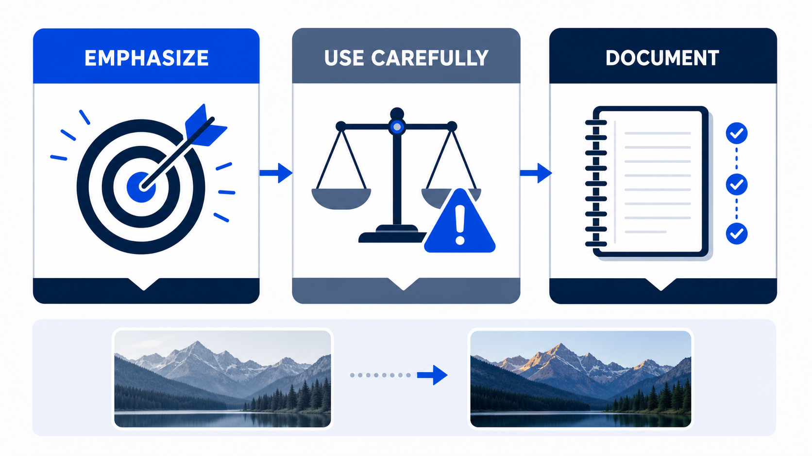
Some tools allow prompt weighting: increasing or decreasing the influence of specific words or phrases. Syntax depends on the platform, so learners should document exactly what tool and syntax they used.
| Decision scenario | Use weighting? | Feedback |
|---|---|---|
| The red coat must remain the main focal point in a fashion photograph. | Maybe | Weighting may help if the tool supports it, but composition and wording also matter. |
| Every word in the prompt feels important, so the learner weights ten phrases. | No | Over-weighting can create confusion and artificial outputs. Prioritize. |
| The tool does not document weighting syntax. | No / document limitation | Do not assume syntax works. Use clear wording and record the limitation. |
Controlled Experimentation: One Variable at a Time
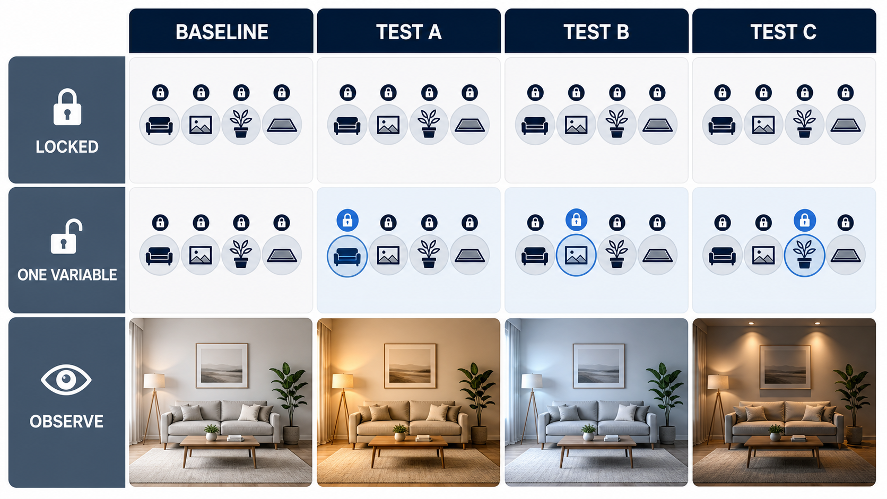
The best way to learn prompt control is through controlled experimentation. Change one element at a time: lighting, style, composition, subject description, camera distance, negative prompt, or weighting. Then document what changed visually.
A realistic photograph of a university design student working with an AI image-generation tool on a laptop, inside a modern studio classroom, medium shot, clean composition, soft daylight, focused atmosphere.
| Version | Changed element | Prompt modification | Visual effect | Problems | Next improvement |
|---|---|---|---|---|---|
| 1 | Lighting | soft daylight | |||
| 2 | Lighting | dramatic side lighting | |||
| 3 | Lighting | blue neon lighting | |||
| 4 | Style | editorial illustration | |||
| 5 | Composition | wide shot |
Prompt Autopsy and Failure Diagnosis
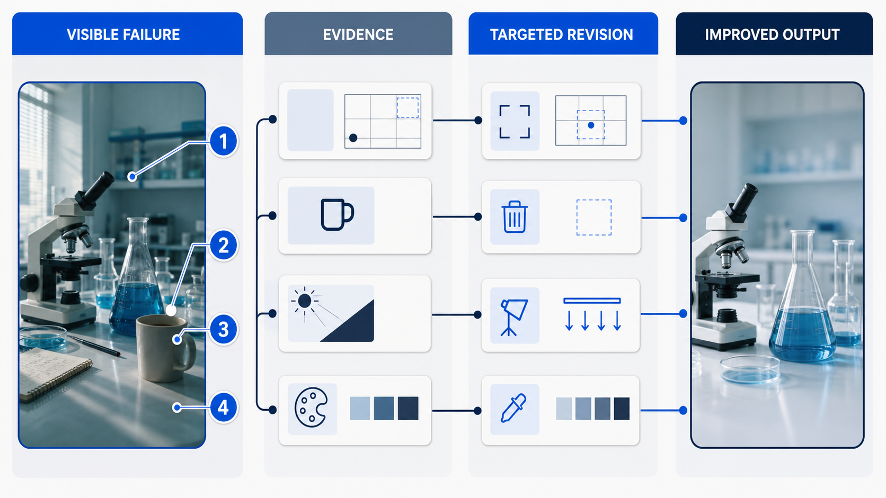
A failed prompt should not lead immediately to random regeneration. Prompt autopsy asks what went wrong, why it happened, and which revision strategy is most appropriate. The solution may be a clearer prompt, a negative prompt, simplification, a different tool, or a workflow change.
Activity: Prompt Autopsy Clinic
Choose one failed prompt and write a targeted revision.
| Original prompt | Visible problem | Likely cause | Revision strategy | Revised prompt |
|---|---|---|---|---|
| A cool AI classroom. | Generic classroom, random screens, weak visual purpose. | Vague adjective + missing context. | Specify subject, setting, action, style, lighting. | |
| A poster for creativity with text. | Fake typography and crowded layout. | Workflow mismatch + text limitation. | Generate background with no text; add typography manually. | |
| A futuristic photographer. | Sci-fi costume, unclear role, inconsistent environment. | Uncontrolled implicit parameters. | Specify professional role, studio, camera, and visual signs of futurism. | |
| A cinematic image of technology. | Generic neon servers or robots. | Missing subject and audiovisual context. | Define film student, editing room, storyboard frames, lighting. |
Final Boss: Translate the Creative Brief
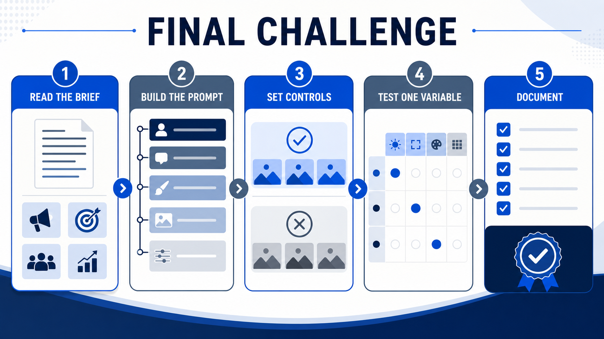
Create a promotional image for a university event about human creativity and AI image generation. The image should feel professional, collaborative, future-oriented, and visually connected to photography, design, and audiovisual production. It should be usable as a poster background, with final title text added manually later.
Part A — Translate the brief
| Brief word / phrase | Visible interpretation | Risk if left vague |
|---|---|---|
| professional | ||
| collaborative | ||
| future-oriented | ||
| photography/design/audiovisual production | ||
| poster background | ||
| title added manually |
Part B — Build the prompt pair
| Positive prompt | Negative prompt |
|---|---|
Part C — Plan one controlled test
| Variable to test | Version 1 | Version 2 | Version 3 | What will remain stable? |
|---|---|---|---|---|
Part D — 60-second presentation script
Final Assessment
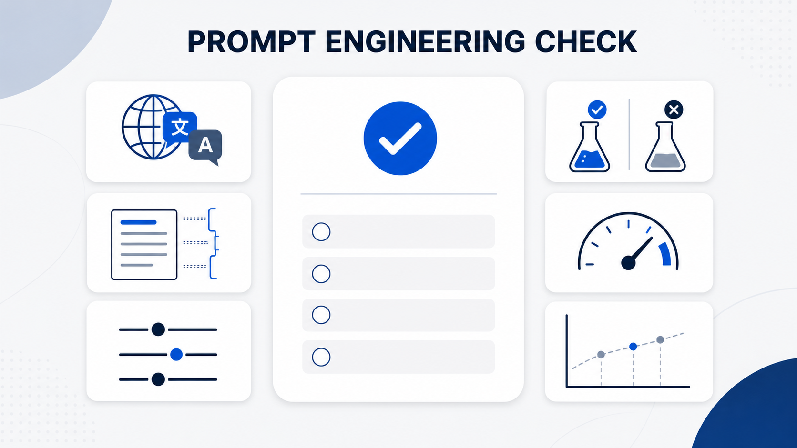
Complete the knowledge check. The LMS score is based on the automatic multiple-choice and true/false items. Short answers are included for reflection and practice.
Exit Ticket and Lesson Summary
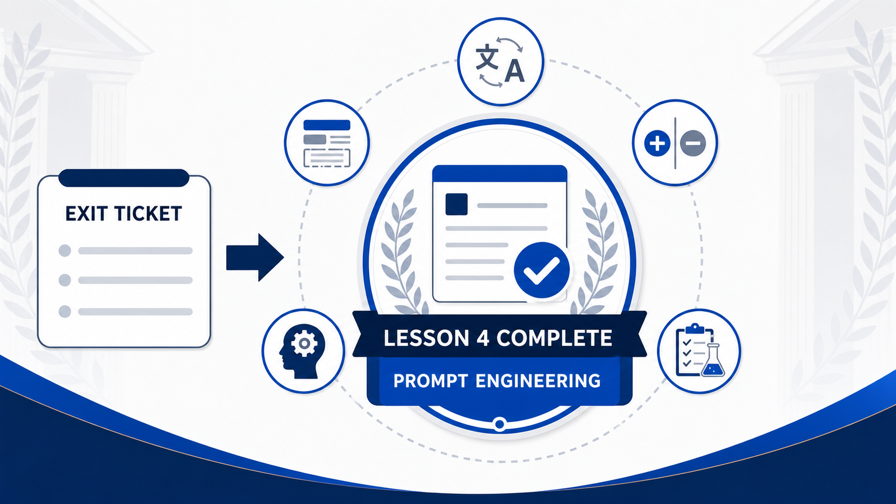
The central lesson is that a prompt is not a wish. It is a visual instruction system. A vague prompt leaves too much to the model, while a structured prompt gives the learner more control over subject, action, context, style, composition, lighting, camera language, mood, and constraints.
| Prompt | Your answer |
|---|---|
| One vague word I can now translate into visual detail is... | |
| One prompt component I will specify more carefully is... | |
| One hidden assumption I should check before generating is... | |
| One negative prompt limitation I should remember is... | |
| One thing I learned about controlled prompt testing is... |
| Task | Complete |
|---|---|
| Completed the translation gap-fill. | ☐ |
| Sorted human-oriented and machine-oriented language cards. | ☐ |
| Built a structured prompt using component cards. | ☐ |
| Rewrote at least three weak prompts. | ☐ |
| Completed the hotspot prompt autopsy. | ☐ |
| Created one positive/negative prompt pair. | ☐ |
| Audited implicit parameters in a vague prompt. | ☐ |
| Completed or planned a one-variable prompt experiment. | ☐ |
| Diagnosed one failed prompt and wrote a targeted revision. | ☐ |
| Completed the Final Boss prompt system and exit ticket. | ☐ |